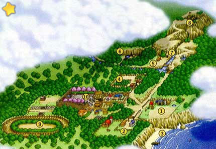

Mapa Mundi |
|||||
|  1: Sua Fazenda Aqui é onde você mora e trabalha fazendo coisas como plantar e colher seus cultivos, alimentar e tirar leite das vacas e treinar seu cavalo para a corrida de cavalos. De manhã você recebe visita do povo da cidade e o prefeito detalha certos eventos em um futuro próximo. 2: Fazenda Verde Esta fazenda é dirigida por Hall Green e ele tem dois filhos morando com ele... Ann Green e Grey Green. Basicamente este é o lugar onde você adquiri seu cavalo e compra coisas para seus animais. Há um total de 3 construções na Fazenda, O azul é a loja de animais onde você compra animais e itens para animais, Quarto de Ann é também está localizado neste lugar. O marrom é onde Grey mora e o telhado vermelho é o celeiro onde ficam os animais. 3: A Praia Aqui você pode pescar na doca (local para as Power Berries), este lugar não é somente uma praia mas o Festival do Espirito é aqui no dia 27 de Inverno... Karen também leva você para assistir os fogos de artificio. 4: Vinícola Aqui é onde Karen e seus pais moram enquanto eles ficam lá esperando as uvas crescerem para fazer um grande lote de vinho... Kai também é empregado da Vinícola. Você pode ter um vinho se você tem uma garrafa no porão. 5: Floresta Externa Você pode achar o pescador aqui (Ele lhe dá uma vara de pescar velha) e a cabana dos carpinteiros onde você pode pagar por uma extensão para sua casa e celeiro. Pescando nesta área é um dos melhores da cidade. Siga o caminho na direita e você chegará a um espaço vazio onde mais tarde no seu primeiro inverno você ajudarpa a construir as fontes termais (Depois do terremoto) 6: Lago da Deusa Aqui é o lago da Deusa está localizado onde você pode dar oferendas de muitos tipos diferentes de vegetais, ela lhe garantirá um desejo por oferenda. Você também pode plantar um flor especial aqui com Popuri mais tarde no segundo verão. 7: Cavernas dos Duendes Os duendes estão localizados aqui e se você se tornar amigo deles eles ajudarão durante tempos dificeis (Como Furacões), também é nesta caverna que a área da mina está localizada, você pode minerar aqui durante o inverno para encontrar coisas valiosas. 8: Topo da Montanha da Lua Este topo é o ponto vocal de muitas coias que acontece com você enquanto vive em sua cidade, você passa o ano novo aqui com sua esposa... Tambpem há um restaurante localizado aqui dirigido pelos dois anciãoes, é dito que eles fazem o melhor rolinho de Primavera da cidade. 9: Trilha de Corrida Aqui é onde você corre com seu cachorro e cavalo duas vezes ao ano... você também pode apostar nas corridas para ganhar pontos para comprar certos prêmios no qual incluem algumas coisas que fazem seu lar parecer melhor. 10: Praça da Cidade A maioria dos festival da cidade acontece aqui, que inclue o voto do rei da colheita e o festival de ano novo... na maioria das vezes do ano é quase completamente vazio. |
|||||